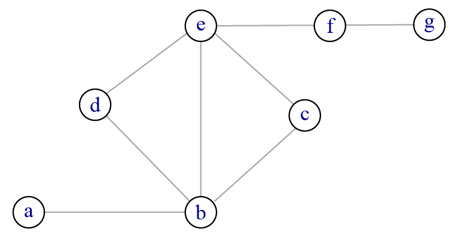
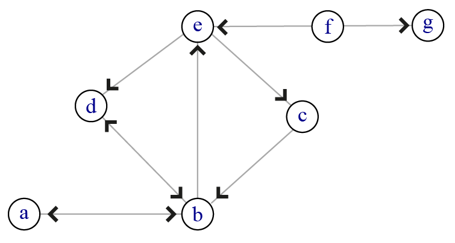
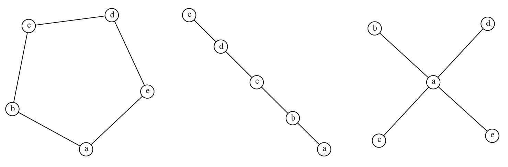

3 Graphe et réseau : principes et vocabulaire de base
Ce chapitre tente d’être simultanément complet et synthétique. Il n’est pas utile de retenir toutes les définitions mais le consulter à l’occasion pour vérifier que vous savez qualifier correctement un réseau donné peut être utile, notamment pour échanger avec vos collègues. La quasi totalité des logiciels et des très bons manuels 1 étant en anglais, les termes anglais sont systématiquement indiqués en italiques et entre parenthèses.
À l’intention des formatrices
Il est sans doute temps d’abandonner le diaporama (si vous en utilisez un) et le cours magistral, de vous munir d’un feutre et de dessiner, de faire dessiner, de faire remplir des matrices avec des 0 et des 1, etc. Dessiner des réseaux très simples (orientés ou non, avec boucle ou simple, avec isolés) puis faire écrire les listes de liens et les matrices d’adjacence correspondantes est un bon moyen pour faire assimiler le vocabulaire et faire comprendre les enjeux liés à la mise en forme des données. Vous gagnerez du temps quand vous expliquerez ce qu’attendent les logiciels ou quand vous aurez des questions des participantes à propos de leurs propres données.
3.1 Des points, des lignes et des chemins
Un graphe est un objet mathématique formé d’un ensemble fini et non vide de points et d’un ensemble fini et éventuellement vide de liens entre ces points (\(G = \{V,E\}\) 2). Le nombre de sommets est appelé l’ordre (order) du graphe ; le nombre de liens la taille (size) du graphe. Les sommets (vertex, pluriel vertices) sont également appelés nœuds, points ou acteurs (node, point, actor). Les liens (edges) sont aussi appelés relations, arcs ou arêtes (relation, arc). Les deux derniers termes sont employés lorsqu’on souhaite différencier les liens dits orientés (un lien du sommet \(v_1\) vers le sommet \(v_2\) n’implique pas l’existence d’un lien de \(v_2\) vers \(v_1\)) - on parle alors d’arcs - et les liens non orientés (tout lien entre \(v_1\) et \(v_2\) suppose l’existence d’un lien entre \(v_2\) et \(v_1\)) - on parle alors d’arêtes.
L’analyse de réseau pour être utile en sciences sociales nécessite des éléments supplémentaires : les sommets sont systématiquement pourvus d’attributs (a minima un nom) et les liens peuvent également être pourvus d’attributs. La figure ci-dessous montre un graphe (à gauche) et un réseau (à droite).
L’objet mathématique à gauche est constitué d’un ensemble de sommets et d’un ensemble de liens entre ces sommets, il s’agit d’un graphe et il n’y a pas besoin d’attributs pour l’étudier ; le réseau à droite a exactement la même forme mais les sommets sont nommés et de deux couleurs différentes. Les liens sont plus ou moins épais, ce qui suggère des relations plus ou moins intenses.
Extrait du fameux jeu de données Zachary Karate Club tiré de l’article de l’anthropologue Wayne Zachary (1977) sur les relations au sein d’un club de karaté.
Un chemin (path) est une suite de liens entre deux sommets. Le plus court chemin (shortest path) désigne le ou les chemins entre deux sommets comprenant le minimum de liens. La longueur d’un chemin entre deux sommets correspond au nombre de liens sur ce chemin ; s’il s’agit d’un plus court chemin, on parle parfois de distance géodésique (geodesic distance, voir figure 3.2). Un chemin comprenant au moins trois liens et dont le sommet de départ et le sommet d’arrivée sont identiques est appelé un cycle 3 (terme identique en anglais).
L’ensemble des sommets liés par au moins un chemin s’appelle une composante ou composante connexe (component). Si tous les sommets d’un graphe appartiennent à la même composante, on parle alors de graphe connexe (connected graph). S’il n’existe pas de chemin entre certains sommets, le graphe est alors non connexe et il est composé de deux composantes ou plus. Il arrive qu’un sommet ne soit connecté à aucun autre, on parle alors d’isolé (isolate). Lorsqu’un réseau est connexe si et seulement si on ne tient pas compte de l’orientation des liens (figure 3.2, réseau 2), on parle de réseau faiblement connexe (weakly connected) ; si un réseau est connexe, y compris lorsqu’on prend en compte l’orientation des liens, on parle de réseau fortement connexe 4 (strongly connected). La distance entre deux composantes connexes est considérée par convention comme infinie.
Le caractère connexe ou non du réseau étudié a des conséquences importantes d’un point de vue méthodologique : les indicateurs basés sur des calculs de plus courts chemins (cf chapitre 5) doivent être interprétés avec précaution lorsque le réseau étudié comprend plusieurs composantes connexes.

Le réseau ci-dessus est connexe : il est possible en partant d’un sommet de rejoindre n’importe quel autre sommet. On peut par exemple rejoindre \(a\) et \(e\) avec les liens {\(ab\),\(bd\),\(de\)}, ce qui donne un chemin de longueur 3. Le plus court chemin entre ces deux sommets est de longueur 2 {\(ab\),\(be\)}. Il peut exister plusieurs plus courts chemins entre deux sommets : entre \(d\) et \(c\), les deux chemins de longueur 2 {\(de\),\(ec\)} et {\(db\),\(be\)} sont des plus courts chemins.

Si les liens sont orientés, il est beaucoup plus difficile d’obtenir un réseau fortement connexe : le nombre de composantes peut devenir élevé, même avec un nombre de sommets réduit, et la longueur des chemins augmente. Ici, les sommets {\(abcde\)} forment une composante connexe, \(f\) et \(g\) sont isolés. Le plus court chemin entre \(e\) et \(c\) est de longueur 1 ({\(ec\)}) ; le plus court chemin entre \(c\) et \(e\) est lui de longueur 2 ({\(cb\),\(be\)}). La plupart des logiciels ne prennent pas en compte l’orientation éventuelle des liens pour calculer les indicateurs basés sur les plus courts chemins.
Certains sommets et certains liens jouent un rôle particulier dans la connexité des réseaux : leur suppression augmente le nombre de composantes. Quand il s’agit d’un sommet, on parle de point d’articulation (articulation point, cutpoint ou cut-vertex) ; quand il s’agit d’un lien, on parle d’isthme (bridge). Dans le réseau de la figure 3.2, \(b\), \(e\) et \(f\) sont des points d’articulation (la suppression d’un sommet entraîne la suppression des liens adjacents à ce sommet). Les liens {\(ab\)}, {\(ef\)} et {\(fg\)} sont des isthmes (un sommet isolé est une composante d’ordre 1 - cf 3.3). Un nombre élevé de points d’articulation et/ou d’isthmes signale un réseau potentiellement vulnérable.
En haut, suppression des points d’articulation (grisé) et conséquences sur la connexité ; en bas, suppression des isthmes. Lorsqu’un sommet est adjacent à un seul lien, ce lien est nécessairement un isthme.
3.2 Qualifier un réseau d’après ses liens
Le type de liens dans un réseau peut permettre de catégoriser ce dernier. Si les liens ont une direction et qu’un lien de \(v_1\) vers \(v_2\) n’implique pas nécessairement un lien de \(v_2\) vers \(v_1\), on parle de graphe orienté (directed graph ou digraph) ; dans le cas contraire, on parle de graphe non orienté (non directed graph). Il est cependant possible de ne pas prendre en compte la direction des liens et de traiter un graphe orienté comme s’il était non orienté 5. Il arrive également que les données disponibles ne permettent pas de connaître la direction initiale. Enfin, certains logiciels ignorent l’éventuelle orientation des liens pour le calcul de certains indicateurs (chapitre 5).
Exemple 1 : les liens d’amitié sur le réseau social Facebook sont au départ orientés : une personne demande à une autre si elle peut être ajoutée comme amie. Cette information est cependant perdue dès que la demande est acceptée : vous êtes amie avec telle personne mais il n’est pas possible de retrouver qui a fait la demande. Dans ce cas, la structure même des données récoltées impose l’absence d’orientation des liens.
Exemple 2 : certains liens familiaux sont non orientés. Si je suis mariée à une personne, cette personne est nécessairement mariée avec moi (ou l’une des deux ment). À l’inverse, un lien de filiation est nécessairement orienté. En fonction de mes questions de recherche, je peux cependant supprimer cette orientation si elle n’est pas utile dans ma démarche.
Le lien entre deux sommets dans le réseau peut être de type présence (1) - absence (0) ; on a alors affaire à un réseau dit binaire ou booléen (binary ou boolean). Il arrive, notamment dans les enquêtes sociométriques, que les liens soient porteurs de signes positifs, indiquant généralement une préférence (j’aime telle personne), ou négatifs, exprimant généralement un rejet (je n’aime pas telle personne). On parle dans ce cas de réseau signé (signed graph). Les logiciels n’étant qu’exceptionnellement conçus pour analyser ce type de réseau, il est rare de les garder sous cette forme et les réseaux signés sont à peine évoqués dans ce petit guide pratique. Enfin, le lien peut être porteur d’une intensité ; on parle dans ce cas de réseau valué ou pondéré (weighted graph).
Exemple : j’étudie les données du commerce international. Je peux choisir de les modéliser sous forme de réseau entre États. Les liens sont orientés (la France exporte tant vers l’Allemagne, l’Allemagne exporte tant vers la France) et valués. Ce réseau peut être transformé de multiples façons afin d’obtenir un réseau non orienté (si je m’intéresse au volume des échanges et non à leur direction) et/ou un réseau binaire (je justifie un seuil permettant de conserver la plus grande partie du flux tout en simplifiant l’analyse).
On appelle graphe simple (simple graph) un graphe qui ne comprend ni boucle (lien d’un sommet vers lui-même, self-tie ou loop en anglais) ni liens multiples (présence de plusieurs liens entre les mêmes sommets). S’il existe des liens multiples, on parlera le plus souvent de graphe multiplexe (multigraph) ou multi-couches (multi-layers) 6 (figure 3.4). Le terme de réseau complexe (complex network), souvent utilisé dans les travaux des informaticiennes et physiciennes, désigne dans l’immense majorité des cas un réseau simple de grande taille (a minima plusieurs milliers de liens et de sommets).

Le graphe de gauche est un graphe simple. Celui du centre présente à la fois une boucle et des liens multiples. À droite, l’épaisseur des liens suggère une intensité de relations différentes entre les sommets ; il s’agit d’un graphe valué. Ces trois graphes sont non orientés.
Quel que soit l’aspect du monde social, passé ou présent, que vous étudiez, il est rare qu’un seul type de relations existe entre vos individus : choisir de modéliser ces relations par un réseau simple est une simplification, souvent nécessaire et utile, de la réalité et il est prudent dans s’en rappeler lorsqu’on commente ses résultats. Les méthodes d’analyse des réseaux multiplexes étant encore aujourd’hui en grande partie exploratoires, elles sont abordées dans le chapitre 8.
Exemple 1 : j’étudie les pratiques de citations dans une discipline donnée. Je crée un lien de l’autrice \(a\) vers l’autrice \(b\) quand un travail de \(a\) cite un travail de \(b\). Comme tous les réseaux de citations, mon réseau est orienté : \(a\) cite sa directrice de thèse mais cette dernière ne cite pas \(a\), \(a\) cite des autrices décédées, etc. La probabilité que les autrices se citent elles-mêmes est forte, ce qui créent des boucles dans mon réseau. Il est également probable que je puisse valuer mon réseau dans la mesure où \(a\) cite sans doute plusieurs travaux d’une chercheuse de sa discipline. Je peux bien entendu choisir d’ignorer les boucles si la pratique de l’auto-citation ne fait pas partie de mes questions de recherche. Je peux aussi négliger la valuation des liens si je considère que le critère pertinent est la citation vs la non-citation. Aucune solution n’est meilleure qu’une autre : tout dépend de ce que j’étudie. Et tant que cette dernière question n’est pas totalement fermée, j’ai tout intérêt à garder les données les plus complètes possibles (chapitre 4).
Exemple 2 : dans un article paru dans la revue Cybergeo, Sandrine Berroir et al. (2017) étudient les relations entre les villes françaises (sommets) et elles prennent en compte sept types de liens différents (navettes domicile-travail, offre aérienne et/ou tgv, partenariats scientifiques, etc.) ; elles obtiennent un réseau multiplexe où certaines relations sont orientées et d’autres non, toutes sont valuées. Il est bien entendu possible de transformer ce réseau multiplexe en partie orienté afin de créer un réseau simple. Les autrices de l’article créent un lien synthétique entre deux villes en trois étapes : discrétiser chaque flux en cinq classes et attribuer un score de 0 (20 % des flux les plus faibles) à 4 (20 % des flux les plus intenses) ; sommer ces scores pour créer un indice synthétique mesurant “l’intensité globale des liens interurbains” ; sélectionner les paires de villes où le score est maximal (4) pour au moins 3 des 7 flux. D’autres critères pouvaient tout à fait être choisis pour cette transformation ; il était également possible de garder la structure multiplexe du réseau pour l’analyser (chapitre 8).
Il est possible, à partir des données relationnelles que vous avez récoltées et mises en forme, de construire un réseau et le type de liens permet de qualifier ce réseau. Gardez cependant à l’esprit que ce réseau peut être modifié. On a tout à fait le droit de ne pas considérer l’orientation ou l’intensité des liens si ces deux critères n’ont pas d’importance pour nos questions de recherche. Il arrive également que la transformation soit liée à nos lacunes (je ne sais pas comment analyser un réseau multiplexe) ou au logiciel que nous utilisons (ce logiciel ne permet pas d’analyser un réseau multiplexe). Ce qui importe est d’expliciter et de justifier les transformations réalisées afin que vos lectrices puissent comprendre votre démarche.
3.3 Qualifier un réseau d’après ses propriétés
Les manuels d’analyse de réseau utilisent souvent pour expliquer les variations d’un indicateur des idéaux-types de réseaux à des fins pédagogiques. Ainsi on peut, pour évoquer la densité (nombre de liens présents divisé par le nombre de liens possibles), distinguer les graphes vides (aucun lien n’existe) et les graphes complets 7 (tous les liens possibles sont présents). Il va de soi que de tels réseaux ne présentent guère d’intérêt pour l’analyse.
Plus proche de certains réseaux, comme beaucoup de réseaux hydrographiques ou d’arbres généalogiques, les réseaux où aucun cycle n’est présent sont appelés des arbres s’ils sont connexes. Un arbre (tree) possède des propriétés intéressantes pour certaines méthodes d’analyse de réseau, notamment parce qu’un arbre de \(V\) sommets contient au minimum et au maximum \(V\) - 1 liens. Si le réseau acyclique n’est pas connexe, on parle de forêt (forest).
Le réseau à gauche est connexe (on peut trouver un chemin entre toute paire de sommets) et acyclique (il n’est pas possible de partir d’un sommet et d’y revenir en empruntant des liens différents). Il comprend 10 sommets et, pour être connexe, il doit avoir au minimum 9 liens. Ce minimum est également le maximum : tout ajout d’un lien sur la figure créerait un cycle. La suppression d’un seul lien crée un graphe non connexe, composé de 2 arbres, appelé forêt (à droite) : tout lien dans un arbre est un isthme.
Certains idéaux-types peuvent avoir des structures proches de celles des réseaux étudiés, par exemple les réseaux linéaires, les réseaux circulaires ou les réseaux en étoile (star-graph). La figure ci-dessous présente ces trois formes : chacun des graphes possède le même nombre de sommets, ligne et étoile ont également le même nombre de liens.

Les réseaux étudiés peuvent avoir des similitudes formelles avec ces trois idéaux-types. Si l’on imagine que les sommets représentent des personnes et les liens des échanges d’information, on note que la situation devient de plus en plus inégalitaire à mesure que l’on se rapproche de l’étoile où le sommet central est un point obligé pour tout échange d’information. Par ailleurs, il est important de se rappeler que des réseaux ayant le même nombre de sommets et le même nombre de liens peuvent avoir des structures très différentes.
Il existe des structures de réseaux, issues des mathématiques ou de la physique, qui servent régulièrement de points de repère pour étudier nos propres réseaux (réseau aléatoire, réseau petit-monde, réseau sans échelle). Dans la mesure où ces modèles nécessitent de connaître certaines mesures, ils seront évoqués dans le chapitre 5.
À l’intention des formatrices
Débuter une formation par une liste de définitions de vingt ou trente termes n’est sans doute pas nécessaire. Il me semble pourtant utile que les personnes sachent rapidement comment qualifier et transformer un réseau. N’hésitez pas à multiplier les dessins et les exemples pour illustrer chaque cas. Il me paraît également essentiel d’insister sur le fait que le réseau est un objet construit pour la recherche : il n’est pas “par nature” orienté, valué ou que sais-je encore mais peut être transformé sans aucun problème, à condition évidemment d’indiquer explicitement les transformations opérées. Il faut cependant être claire avec les participantes : choisir de conserver certaines propriétés originelles du réseau (notamment pour les réseaux bimodaux et multiplexes) restreint le choix des logiciels adaptés pour leur analyse (chapitre 13).
3.3.1 Graphe unimodal, bimodal et hypergraphe
On parle de réseau uniparti, unimodal ou one-mode quand le réseau est constitué d’un ensemble de sommets et d’un ensemble de liens entre ces sommets. Lorsqu’aucun adjectif n’est présent, le réseau considéré est dans l’immense majorité des cas unimodal. La grande majorité des articles publiés en analyse de réseau concerne ce type d’objet et la majeure partie des mesures et des méthodes d’analyse a été construite pour des réseaux unimodaux.
Un graphe est dit biparti (bipartite graph) si son ensemble de sommets \(V\) peut être divisé en deux sous-ensembles disjoints \(V_1\) et \(V_2\) tel que chaque arête ait une extrémité dans \(V_1\) et l’autre dans \(V2\) ; on le note alors \(G = \{V_1, V_2, E\}\). En sciences sociales, les termes de réseau biparti, bimodal ou 2-mode sont souvent considérés comme synonymes 8. J’utiliserai dans la suite de ce guide le terme bimodal qui me parait le plus adapté pour désigner les relations entre deux ensembles différents de sommets.
Les liens dans un réseau bimodal sont généralement considérés comme non orientés ; ils peuvent par contre être binaires ou valués. Une opération mathématique simple, illustrée dans la figure 3.6, permet de transformer un réseau bimodal en deux réseaux unimodaux valués. On pourrait tout à fait imaginer des réseaux tripartis ou quadripartis mais aucune méthode n’a su s’imposer pour les analyser 9.
Les données modélisées sous forme de réseau bimodal pourraient souvent être modélisées sous forme d’hypergraphe. Un hypergraphe est un graphe où un lien peut contenir de 1 à \(n\) sommets, \(n\) étant le nombre de sommets du graphe. Peu de logiciels permettent de les analyser et l’utilisation des hypergraphes reste rare en sciences sociales.
Exemple 1 : je m’intéresse aux pratiques de co-signatures d’articles scientifiques. Je constitue un corpus d’articles (ensemble de sommets \(V_1\)) et un corpus d’autrices ayant signé ces articles (ensemble de sommets \(V_2\)). Le réseau est bimodal car les liens existants sont entre autrices et articles. Si je le transforme en réseau unimodal autrices - autrices, un lien entre deux autrices signifie qu’elles ont signé ensemble un nombre d’articles au moins égal à 1. Si je le transforme en réseau articles - articles, un lien entre deux articles signale la présence d’au moins une autrice commune aux deux articles (figure 3.6).
Exemple 1bis : je m’intéresse aux pratiques de cosignatures d’articles scientifiques. Je peux choisir une modélisation des données sous forme de réseau bimodal ; je peux également choisir d’utiliser des hypergraphes où un lien équivaut à un article et les \(x\) sommets de ce lien aux autrices (figure 3.7).
Le réseau bimodal de gauche peut être transformé en deux réseaux unimodaux valués : le réseau articles - articles au centre, le réseau autrices - autrices à droite. Dans le réseau central, l’intensité du lien A2-A3 est de 2, cela signifie que ces deux articles partagent deux mêmes autrices. Dans le réseau de droite, l’intensité du lien a2-a4 est de 2, cela signifie qu’elles ont co-signé deux articles. La transformation en réseau unimodal valué s’accompagne d’une perte d’informations dans la mesure où il n’est plus possible, une fois la transformation réalisée, de retrouver la structure de départ du graphe bimodal. Cette transformation peut s’avérer nécessaire pour l’analyse, de nombreux logiciels n’étant pas conçus pour analyser des réseaux bimodaux.


La représentation sous forme de réseau bimodal est courante, celle par hypergraphe l’est moins. Cette dernière présente pourtant des atouts intéressants pour l’exploration visuelle des données (chapitre 12). La deuxième figure a été réalisée avec le logiciel Paohvis, Valdivia et al. (2018).
Le réseau unimodal valué issu du réseau bimodal de départ indique une cooccurence et cette relation n’est pas nécessairement synonyme d’interactions ou de relations 10. Si je remplace mon corpus d’articles par un corpus de conférences scientifiques, je peux transformer mon réseau pour obtenir un réseau chercheuses - chercheuses où le lien indique qu’elles ont assisté à 1, 2 ou \(x\) conférences communes ; rien ne me permet de supposer que ces deux personnes se connaissent, connaissent leurs travaux respectifs ou se sont adressées la parole.
Le réseau multi-niveaux (multilevel network) peut être considéré comme un mélange entre réseaux unimodaux et bimodaux. Le réseau est en partie bimodal : on étudie les liens entre deux catégories de sommets, par exemple entre des personnes et des organisations. Il est également unimodal dans la mesure où on cherche à étudier dans le même temps les liens à l’intérieur des deux niveaux considérés. J’aurai donc d’une part les liens d’appartenance entre individus et organisations, les liens entre les individus et enfin les liens entre organisations. Ce type d’approche nécessite un dispositif méthodologique de recueil des données plus lourd que les précédents.
3.3.2 Réseau planaire et réseau non planaire
Un graphe planaire (planar) est un graphe pouvant être projeté sur un plan sans qu’aucun lien ne se croise. Dans un graphe non planaire, deux liens peuvent se croiser sans problème. Lorsqu’on passe du graphe au réseau, le choix est en partie lié au type de sommets et au type de liens étudiés. Un réseau routier est généralement considéré comme un réseau planaire : les routes forment les liens et les intersections forment les sommets. Certes, il peut y avoir des ponts et des tunnels qui perturbent légèrement la structure mais, dans l’ensemble, le réseau peut être considéré comme planaire. Certains réseaux de métro sont planaires (Marseille), d’autres ne le sont pas (Paris). Le réseau aérien peut lui être considéré comme non planaire, les couloirs aériens pouvant emprunter les trois dimensions.
Le réseau de gauche est planaire, aucune arête ne se croise. Il est également complet ; le seul lien manquant (2-4) ne peut être ajouté sans provoquer une intersection de liens. Le réseau de droite est non planaire et complet.
Le fait de considérer qu’un réseau est planaire a des conséquences méthodologiques fortes dans la mesure où les formules permettant de calculer les indicateurs doivent être adaptées (chapitre 5), cela impacte également le choix du logiciel utilisé. Le choix planaire/non planaire est moins fonction des liens présents et de l’existence d’éventuels croisements que de la possibilité d’imaginer des liens entre tous les sommets. Par exemple, si je considère les relations ferroviaires entre les villes françaises de plus de 20 000 habitants, imaginer une voie ferrée directe entre chacune de ces villes n’a pas de sens, que ce soit au niveau économique ou environnemental, et le réseau sera considéré comme planaire. Si je considère les relations au sein d’une classe de 25 élèves, je peux très bien imaginer que chaque élève connaisse les noms et prénoms de tous les autres élèves et le réseau sera considéré comme un réseau non planaire, quelles que soient les relations existant réellement dans cette classe.
3.4 Vos réseaux, vos choix
Au risque de me répéter, un réseau, qu’il s’agisse d’un réseau d’infrastructures, d’un réseau social (au sens sociologique et non numérique du terme) ou d’un réseau écologique, n’existe pas en soi, c’est un construit comme le sont les données relationnelles ayant servi à créer ce réseau. Il est toujours nécessaire de définir son ensemble de sommets et de définir ce que représentent les liens entre ces sommets.
Un réseau peut être transformé afin d’être plus adapté aux questions que vous vous posez et/ou aux outils et aux méthodes disponibles. La seule règle est d’expliquer comment on passe des données de départ au réseau analysé et, c’est quand même préférable, de justifier les transformations ou sélections opérées avant de mener à bien l’analyse.
Ce qui est vrai pour la construction du réseau reste bien entendu vrai pour l’analyse et la visualisation des données relationnelles : chaque fois que je fais un choix, que je décide de supprimer telle ou telle information, il est important d’expliquer comment et pourquoi je le fais.
À l’intention des formatrices
Les six termes de vocabulaire que les participantes sont censées connaître à l’issue d’une initiation à l’analyse de réseau sont sommet, lien, connexe, réseau orienté, réseau valué, réseau bimodal. Si on connaît la signification de ces termes, on doit pouvoir retrouver les autres (ex : sommets + liens = réseau ; inverse de réseau orienté = réseau non orienté, etc.).
Si les participantes oublient les boucles ou les liens multiples, ce n’est pas très grave : 95 % de la littérature en sciences sociales analysent des réseaux simples (pourcentage non validé par une étude empirique digne de ce nom). Les réseaux planaires intéressent les seules géographes des transports, et encore, réseaux fluvial, routier et ferré uniquement.
Les manuels francophones d’analyse de réseaux sociaux sont de bonne qualité et se complètent bien les uns les autres, je pense notamment à la paire Lazega (2014) - Mercklé (2011), mais leur format réduit ne leur permet pas de lutter contre le manuel de Wasserman and Faust (1994) - une mise à jour s’impose - ni contre celui de Newman (2018). Ces deux ouvrages sont indispensables à qui souhaite utiliser sérieusement l’analyse de réseau ; le manuel de Newman est nécessaire si l’on souhaite échapper à la seule Social Network Analysis. On les trouve gratuitement en ligne sans problème (zlibrary était votre ami, libgen l’est encore).↩︎
Dans l’ensemble de ce texte, les graphes sont notés \(G\), les ensembles de sommets \(V\) (comme vertices) et les ensembles de liens \(E\) (edges). Un sommet donné sera noté \(v\), un lien précis \(e\).↩︎
La théorie des graphes distingue les cycles dans les graphes non orientés et les circuits dans les graphes orientés ; la distinction a peu d’intérêt en sciences sociales.↩︎
Wasserman et Faust (op. cit.) distinguent également les uniterally et les recursively connected graphs selon que les mêmes liens sont empruntés dans un sens et dans l’autre dans les graphes orientés (p. 132).↩︎
Il est toujours possible de transformer ses données, et donc ses réseaux, pour les adapter à ses questions de recherche et/ou aux méthodes disponibles, il suffit simplement de documenter les transformations effectuées.↩︎
La terminologie est en pratique beaucoup plus confuse : Kivela et al. (2014) répertorient 26 termes différents désignant peu ou prou le même type d’objet. Le terme de pseudographe désignant les graphes avec boucles et liens multiples n’est quasiment jamais utilisé en sciences sociales.↩︎
Attention à ne pas confondre les deux emplois du terme “réseau complet” : il peut s’agir de la démarche de recueil de données (ensemble des liens au sein d’un groupe donné, par opposition aux approches par réseau personnel) ou d’un réseau où tous les liens possibles sont présents.↩︎
En théorie des graphes, le caractère biparti d’un graphe est lié à sa structure ; ainsi tout arbre est un graphe biparti (Beauguitte (2023)).↩︎
Je pourrais par exemple avoir un corpus d’autrices, un corpus de revues où publient ces autrices et un corpus d’éditrices propriétaires de ces revues et créer ainsi un réseau triparti.↩︎
On connaît en général les autrices avec lesquelles on signe un article. Mais ce n’est pas toujours le cas.↩︎